흡수에 의한 분리
공기에 오염물이 섞여있을 때, 이를 액체에 통과시켜 오염물을 제거하는 것이 흡착 분리이다.
이번 챕터에서는 공기에 벤젠(오염물)이 섞여 있을 때, 이를 오일에 통과시켜 분리하는 예제를 통해 흡수에 의한 분리를 알아본다.
ex) 100kg/min 의 공기에 1kg/min의 벤젠이 섞인 물질이 오일층을 통과한다. 이때 오일 중 벤젠의 평형 농도는 1kg 벤젠/100kg 오일이다.
그림은 다음과 같다.
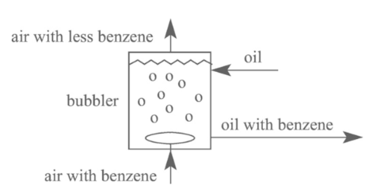
먼저 다음과 같은 그림을 그린다. y축은 공기중 벤젠의 비율, x축은 오일 중 벤젠의 비율이다.
맨 처음 조건에서는 공기중에 벤젠이 존재하고 오일에는 벤젠이 없을 것이다.
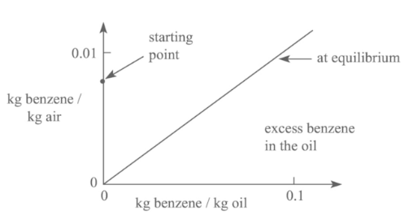
이때, 질량보존 법칙에 의해 다음 식이 성립한다.
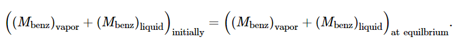 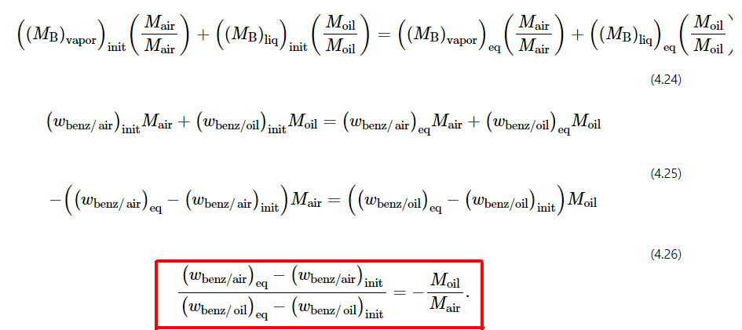
맨 마지막 식이 의미하는 것은 평형선에서 점과 시작점에서 점 사이의 기울기는 오일과 공기의 질량비라는 것이다. 즉 한번 흡수가 일어날 때 기울기는 오일과 공기의 질량비만큼이다.
개방계에서는 다음과 같다.
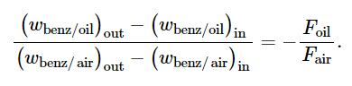
2단 흡수기 장치에서는 다음과 같을 것이다.
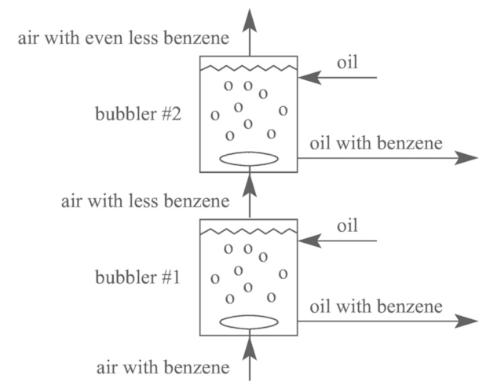 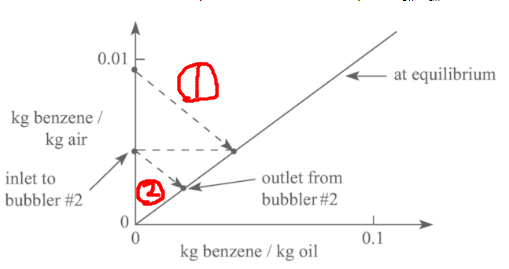
그런데 이 시스템의 문제점은 매 스테이지마다 깨끗한 새 오일을 공급해줘야 한다는 것이다. 이는 비용문제를 초래한다. 맨 밑에서 공급되는 공기는 오염물 농도가 많을 것이다. 그러나 위쪽 단으로 갈 수록 공기는 깨끗해지며 따라서 위쪽 단의 오일의 불순물 농도도 작을 것이다. 따라서 위쪽 단의 오일을 밑으로 순환시켜 재사용하는 기기를 생각해보면 좋을 것이다.
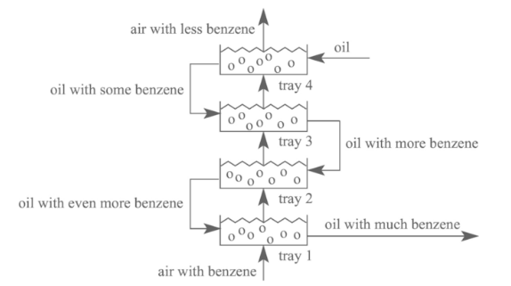 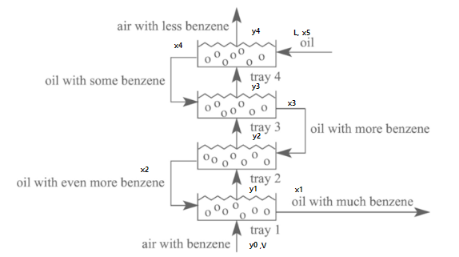
문제는 이렇게 될 경우, 공급하는 공기의 유량 V와 그 중 벤젠 무게비인 y0와 깨끗한 오일의 공급유량 L, 벤젠 무게비인 x5는 알지만 x4,x3,x2,x1 그리고 y1,y2,y3,y4를 아직 알 수가 없다.
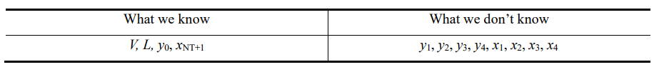
이때 이는 조작선을 도입하여 해석할 수 있음이 알려져있다.
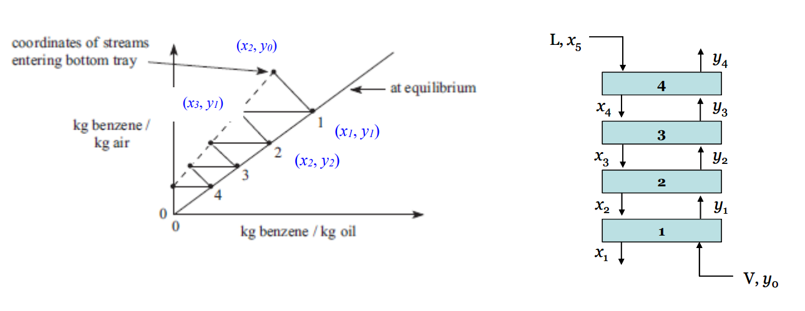 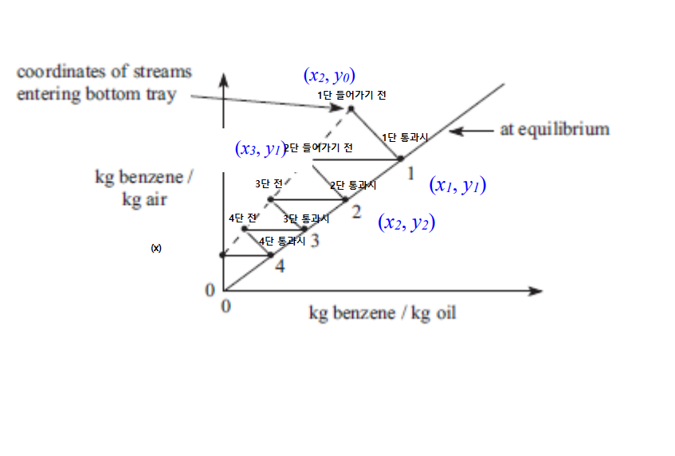
조작선의 방정식은 다음과 같다.
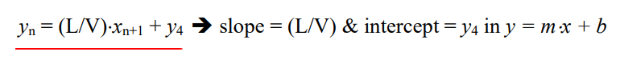
즉 yn=(L/V)X n+1 + 마지막 y값이 조작선의 식이다.
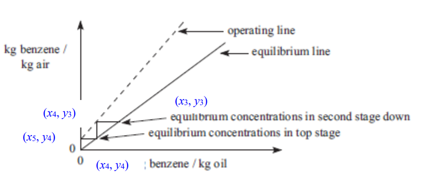
이렇게 선을 그으면 y4라는 특정 최종 농도를 달성하는데 필요한 초기 물질의 농도값을 알 수 있다. 예컨데

선의 끝에 x1,y0에 해당하는 비율을 가진 물질을 넣으면 흡수의 결과로 y4 비율을 가진 기체가 나온다는 것이다.
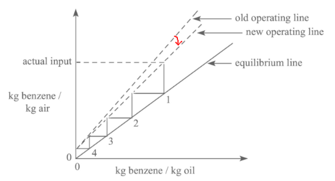
만약 실제 input 기체의 벤젠 비율이 더 적다면, 조작선의 기울기를 조작하여 이를 맞출 수 있다. 이는 Foil/Fair의 비에 달려있으므로 oil의 유량값을 줄이면 기울기가 줄어들 것이다.
요약!!
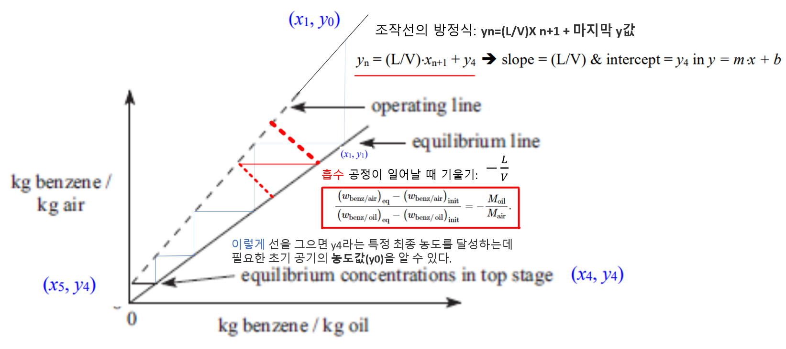
조작선과 평형선이 만나는 점을 pinch point라고 한다.
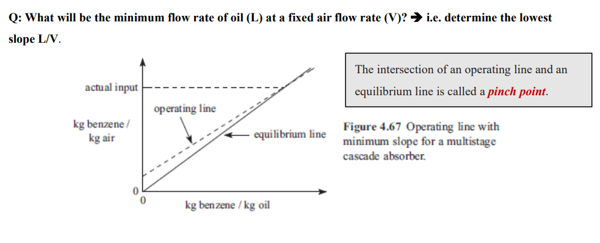
조작선의 기울기가 크다는 것은 L/V 값이 크다는 것으로, 즉 오일이 많이 필요하다는 것이다. 이 경우 재료 값이 많이 들지만 그만큼 한번 운전할 때 흡수되는 불순물의 비율이 커지게 되므로 조금만 운전해도 처리가 잘 되어 운전비는 적어진다. 반면 L을 적게 할 경우 기울기가 줄어들면서 효율이 줄어들어 많은 단을 사용해야한다.
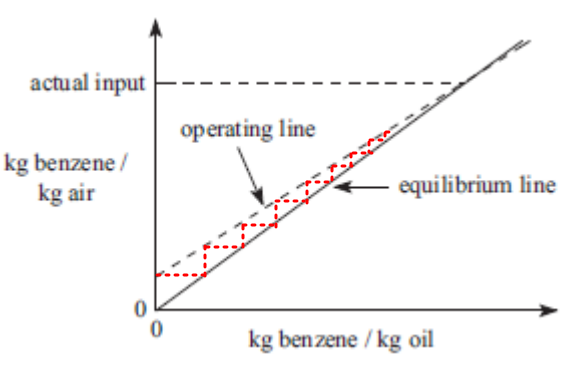
따라서 운전비와 재료비는 반비례하는 관계이다.
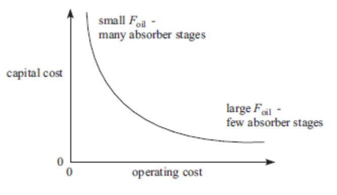